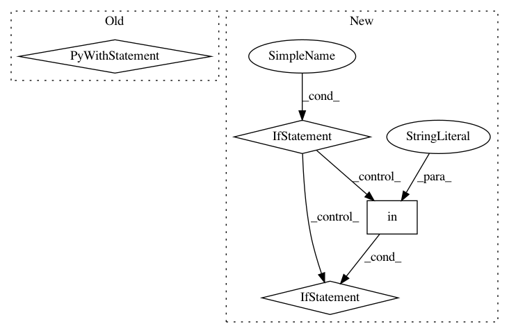

34bae27ac7d3c39335a2b8c7d4cd4efba56aa398,rllib/execution/replay_buffer.py,LocalReplayBuffer,add_batch,#LocalReplayBuffer#Any#,348
Before Change
// Handle everything as if multiagent
if isinstance(batch, SampleBatch):
batch = MultiAgentBatch({DEFAULT_POLICY_ID: batch}, batch.count)
with self.add_batch_timer:
for policy_id, s in batch.policy_batches.items():
for row in s.rows():
self.replay_buffers[policy_id].add(
row["obs"], row["actions"], row["rewards"],
row["new_obs"], row["dones"], row["weights"]
if "weights" in row else None)
self.num_added += batch.count
def replay(self):
if self._fake_batch:
After Change
if isinstance(batch, SampleBatch):
batch = MultiAgentBatch({DEFAULT_POLICY_ID: batch}, batch.count)
with self.add_batch_timer:
if self.replay_mode == "lockstep":
// Note that prioritization is not supported in this mode.
for s in batch.timeslices(self.replay_sequence_length):
self.replay_buffers[_ALL_POLICIES].add(s, weight=None)
else:
for policy_id, b in batch.policy_batches.items():
for s in b.timeslices(self.replay_sequence_length):
if "weights" in s:
weight = np.mean(s["weights"])
else:
weight = None
self.replay_buffers[policy_id].add(s, weight=weight)
self.num_added += batch.count
def replay(self):
if self._fake_batch:
In pattern: SUPERPATTERN
Frequency: 4
Non-data size: 4
Instances
Project Name: ray-project/ray
Commit Name: 34bae27ac7d3c39335a2b8c7d4cd4efba56aa398
Time: 2020-06-12
Author: ekhliang@gmail.com
File Name: rllib/execution/replay_buffer.py
Class Name: LocalReplayBuffer
Method Name: add_batch
Project Name: daavoo/pyntcloud
Commit Name: cdbe12c9ecc86fb54e6310d6aeab98edc6eba879
Time: 2017-05-02
Author: daviddelaiglesiacastro@gmail.com
File Name: pyntcloud/plot/points.py
Class Name:
Method Name: plot_PyntCloud
Project Name: has2k1/plotnine
Commit Name: 98250a167fba43736bde5875007b0cf9fee05257
Time: 2019-12-06
Author: has2k1@gmail.com
File Name: plotnine/layer.py
Class Name: layer
Method Name: compute_aesthetics
Project Name: cmu-db/ottertune
Commit Name: 72580f65a0e0c986d45c3afe0c2d61281df75734
Time: 2020-04-03
Author: dvanaken@cs.cmu.edu
File Name: server/website/website/management/commands/startcelery.py
Class Name: Command
Method Name: handle